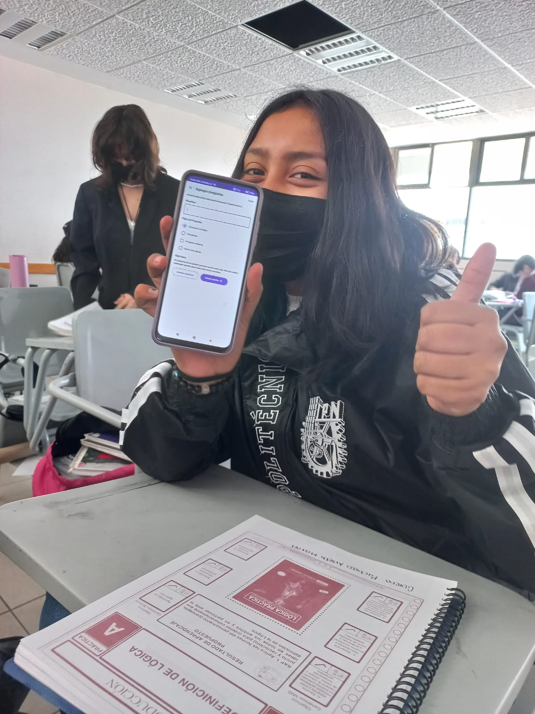

A través del tiempo transcurrido, muchos nos dimos cuenta de que la mayoria de alumnos del grupo 2TM1 en el CECyT 16 contaban con problemas para recordar temas, lo que generaba que hubiera un grande índice de reprobados en distintas materias, causado de igual manera porque al acercarse los periodos de examenes no tenian la suficiente disciplina para practicar el hábito de estudio por lo que decidimos que teniamos que hacer algo para resolverlo. Buscamos varias alternativas para lograrlo hasta que se llegó a la conclusón de que debiamos crear una solución digital, que aproveche las tecnologías del conocimiento. Jump Nació.

Al inicio del proyecto, la confusión de cómo hibamos a lograr poner en pie esta idea era muy grande, tanto que no podiamos manejarlo. El inicio de un proyecto implica una mezcla de reflexión, investigación, planificación y acción. Teniamos la idea, pero faltaba lo más dificil; poner de acuerdo a todo el grupo para que colaboraran, lo que nos llevó bastante tiempo debido a la diferencia de pensamientos que existia. Después de un tiempo logramos estar en la misma sintonía y a partir de ahí todo fue más fácil, comenzamos a dividir el trabajo para que no solo una persona se cargara toda la responzabilidad, lo que nos permitió continuar rapidamente con el desarrollo de la aplicación.
Una vez que todos pudieron ponerse de acuerdo todo fue mas facil, comenzamos por crear la plataforma en la que se llevaria a cabo este proceso para despues revisar los temas que se vieron en las materias y en este punto hubieron muchos problemas, debido a que al inicio nadie queria participar, pero al ver que era para un bien, decidieron aportar. Luego comenzamos a idear preguntas, preguntas que no fueran tan complicadas de digerir, si no preguntas que permitieran a los estudiantes recordar, con palabras clave y sintetizando cada tema, por ultimo comenzamos a dar "forma" a toda la estructura para ir perfeccionando poco a poco e ir checando si todo estaba correcto y en buen funcionamiento
Muchas mentes unidas pueden hacer maravillas y desarrollar soluciones a cualquier problema, una prueba de ello es este proyecto, que no hubiera sido posible de realizar sin el apoyo de nuestros compañeros, sabemos que a todos se les dificulta algo en la escuela y es por eso por lo que creamos esta aplicación, como una alternativa para desarrollar, potenciar nustros conocimientos al máximo y ayudar a nustros compañeros politécnicos y futuramente a todo aquel que necesite ayuda.